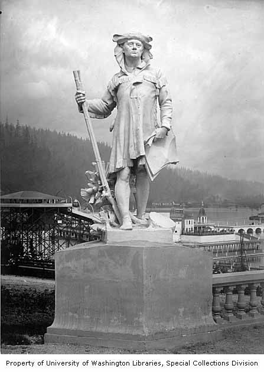
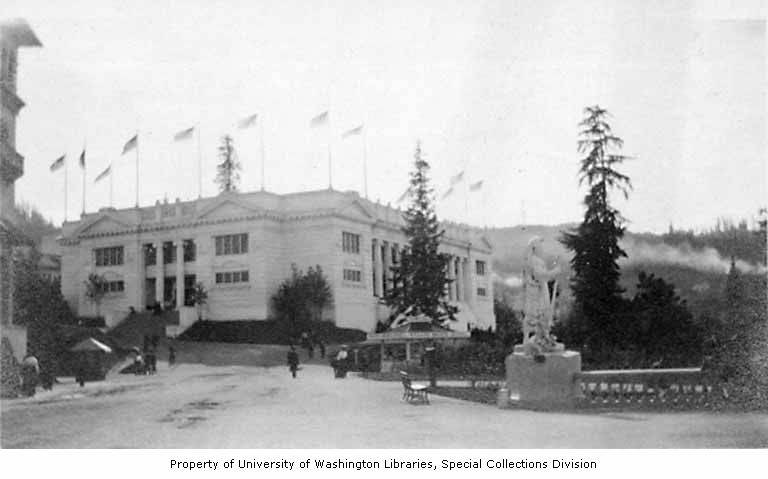

Statue of Meriwether Lewis
Location in 1905: 45.53840012, -122.70765066
Created by American sculptor Charles Albert Lopez.
In the sculpture, Lewis holds a long rifle in one hand and a set of papers in the other hand, signifying his role as an official representative of Thomas Jefferson's administration.

